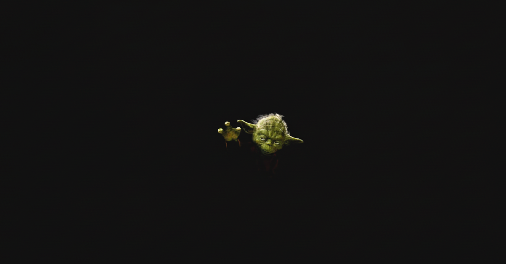

心(Manaka)
Likes: Tech, watching motorsports, and sleeping.
Always look on the bright side of life.
X (Twitter)
Instagram
Youtube
Contact
Built by Manaka
The wallpaper uses images from Windows Spotlight.
HTML5
CSS3
JS